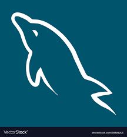

👩🏻💻Hands-On Work
Predictive Analysis in Sleep Health
Used ML models (Logistic Regression, Random Forest, XGBoost) to analyze sleep patterns.

Hotel Cancellation Analysis
Conducted data cleansing, EDA, and visualizations to identify cancellation patterns and improve revenue strategies.
⚡ Tech Arsenal
Python
Django

Spring Boot

PostgreSQL

MySQL

Git

Docker
💼 Professional Journey
Software Engineer | AMD (Through TCS)
Jun 2021 - July 2023
Developed Python automation scripts for data processing, reducing manual effort by 30%.
Optimized SQL queries in PostgreSQL/MySQL, improving data extraction speed by 40%.
Built internal tools with Flask, integrated AWS S3, and developed real-time APIs.
Automated data reconciliation, reducing errors by 25% and enabling better KPI tracking.